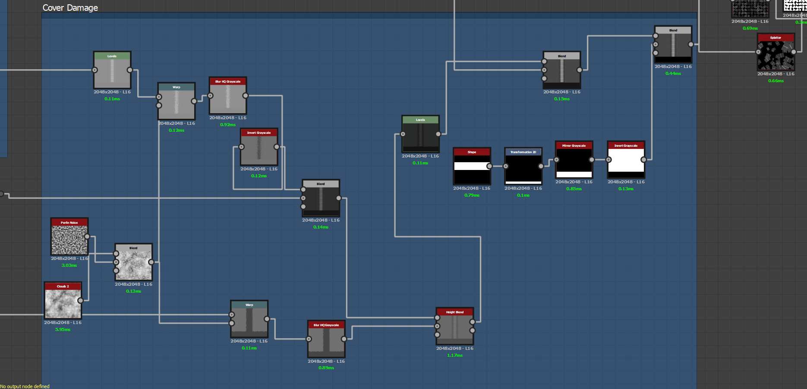

What do you see inside a magic researcher’s lab or library from a fantasy world? In my imagination it was a cluster of books and pages scattered across the floor. I started this project to create a bunch of old books. And it was a great learning process.


This texture was really interesting to work on. Making the spine of books (binding part of the back cover) was something new to me to produce only from nodes and not from any 3D depth backed object. The usage of grayscale to produce height maps is well known. But working with it and bringing out what we imagine was really something. To make the particular shape of book-spine, I used the shape node and then added a linier gradient node which can be rotated between 0 and 90 degree resulting the gradient along either at y axis or x axis respectively. Then I adjusted the grayscale value with a curve node. In my local library I had noticed some old books had few bumpy cross section on spine either due to design or to separate the name and author. With the last used gradient node and a transformation node I connected it to a tile sampler node so that I can control the number of this shape. The gradient node helps to maintain the slope around the edges and I didn’t need to get another headache on adjusting it. Rest of the node for the spine were either transform to control thickness and blend to join other parts.

If you open a book, you will notice that it creates creases on the side of its spine. So I had to add them as well. It was done with perlin noise, one of the noise that is really useful and produce interesting shape in substance designer. I wrapped it with both the spine and rectangular shape of cover to blend it smoothly.
Next I used Shape Splatter to scattered those books. I used this node instead of tile generator because it has height scale inside that can be changed randomly. Tile generator can do this as well, but probably needs more than one nodes to work with that. I want to add more elements to it in future. Kind of got stuck when I wanted to add multiple text titles procedurally added to books which are scattered.
This project introduced me to some interesting shapes. These shapes will surely help me in future. Apparently I might produce a bookshelf or a whole library with these shapes later!